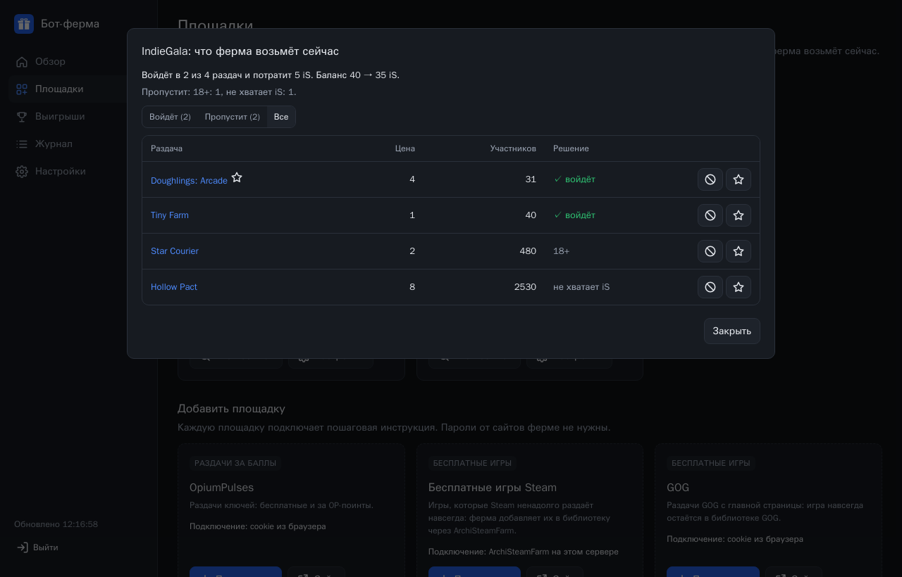
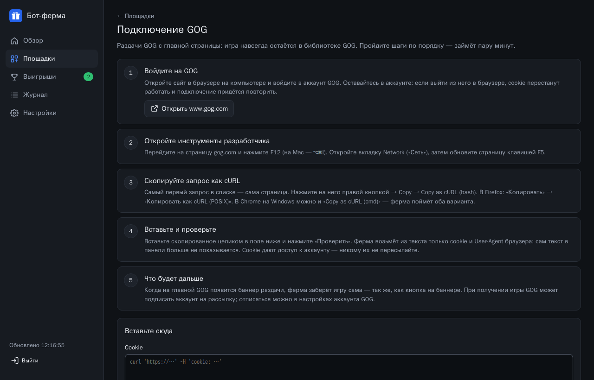

Подключение за минуту
Скопируйте запрос сайта как cURL и вставьте. Ферма проверит вход, ничего не сохраняя, и покажет баланс.
— открытый код · MPL-2.0 · Python 3.10+
[IndieGala] Аккаунт palma, баланс 40 iS [IndieGala] Вошёл: ★ Doughlings: Arcade за 4 iS (участников 31, осталось 36) [IndieGala] Вошёл: Tiny Farm за 1 iS (участников 40, осталось 35) [IndieGala] Пропущено: не хватает iS — 12, DLC / саундтрек / пак — 4, 18+ — 3 [SteamGifts] Ждёт поинты: 21 из 30 P [Steam] Вошёл: Star Courier — добавлено в библиотеку Steam [GOG] раздачи сейчас нет 🎉 Выигрыш на IndieGala: Hollow Pact
Формат строк настоящий, игры выдуманные.
три с раздачами за внутреннюю валюту и три с бесплатными играми
ферма входит по cookie из браузера и не знает ни одного вашего пароля
Ферма / 01
Каждая площадка работает в своём потоке, а панель показывает, кто сейчас занят, почему кто-то ждёт и сколько ушло за сутки.

Скопируйте запрос сайта как cURL и вставьте. Ферма проверит вход, ничего не сохраняя, и покажет баланс.
Все текущие раздачи и решение по каждой: войдёт или почему пропустит. Без единого потраченного очка.
Выигрыши, слетевшие cookie и сводка за сутки. С телефона: /status, /pause, /run, /preview.
Выигранный ключ активируется в Steam одной кнопкой, бесплатные игры Steam попадают в библиотеку сами.
Часы работы, лимиты на сутки, без DLC и 18+, без игр, которые уже есть. Сначала — то, что в списке желаемого.
Любой компьютер, который не выключается. Панель видна только в вашей сети или через Tailscale.



Площадки / 02
Три сайта с раздачами за внутреннюю валюту и три источника бесплатных игр. Строка ведёт на страницу вики.
Бот для командной строки вдобавок сообщает о бесплатных играх Epic, GOG и других магазинов по данным GamerPower.
Шансы / 03
На IndieGala ферма ставит первыми раздачи с лучшим шансом на один потраченный iS: 1 / ((участников + 1) × цена). Подвигайте ползунки.
шанс выиграть
1 / 41
шанс на 1 iS: 0.0244
Установка / 04
Ферма — для сервера или домашнего компьютера. Бот для командной строки — если нужна только SteamGifts.
Скачайте код и поставьте зависимости. Нужен Python 3.10 или новее.
git clone -b botfarm https://github.com/PalmaLuv/SteamGiftBot.git cd SteamGiftBot python3 -m venv env env/bin/pip install -r requirements.txt
Задайте пароль панели и запустите ферму на адресе компьютера в вашей сети.
env/bin/python -m steamgiftbot.farm --set-password env/bin/python -m steamgiftbot.farm --host 192.168.1.10
Откройте http://192.168.1.10:8092, войдите и подключите площадку. Служба systemd, фаервол и телефон — в вики.
Пока ферма в ветке botfarm, поэтому клонируется с -b botfarm. После слияния в main флаг не понадобится.
Скачайте SteamGiftBot.exe и .sha256 со страницы релизов. Python не нужен.
Сверьте контрольную сумму со строкой в файле .sha256.
certutil -hashfile SteamGiftBot.exe SHA256
Запустите: бот спросит cookie и настройки. Пробный проход покажет, куда он вошёл бы, ничего не тратя.
SteamGiftBot.exe --once --dry-run
Положите cookie SteamGifts (значение PHPSESSID) в файл-секрет: так его не видно в docker inspect.
sudo mkdir -p /srv/steamgiftbot printf '%s' 'PHPSESSID' | sudo tee /srv/steamgiftbot/cookie >/dev/null sudo chown -R 1000:1000 /srv/steamgiftbot && sudo chmod 600 /srv/steamgiftbot/cookie
Запустите контейнер. Он работает не от root, образ собран для amd64 и arm64.
docker run -d --name steamgiftbot --restart unless-stopped \ -v /srv/steamgiftbot:/app/data \ -e STEAMGIFTBOT_COOKIE_FILE=/app/data/cookie \ -e STEAMGIFTBOT_GIFT_TYPE=All -e STEAMGIFTBOT_MIN_POINTS=0 -e STEAMGIFTBOT_PINNED=no \ ghcr.io/palmaluv/steamgiftbot:latest --config /app/data/config.ini
Это бот для командной строки, только SteamGifts. Ферму в Docker запускают с параметром --data — см. вики.
Вопросы / 05
Коротко о главном. Подробности — в вики.
Могут. SteamGifts запрещает скрипты автовхода, у других площадок свои правила. Ферма делает паузы, отступает, когда сайт просит, и не обходит Cloudflare и капчи, но решение и риск — ваши.
Нет. Она входит по cookie, скопированным из браузера, и хранит их только на вашем компьютере. Панель не отдаёт их обратно даже вам.
Подойдёт любой компьютер, который не выключается: мини-ПК, старый ноутбук, Raspberry Pi. Ферма почти всё время ждёт.
Да. Дома — по адресу компьютера в сети, вне дома — через Tailscale. Её можно добавить на главный экран.
Откройте у площадки вкладку «Что возьмёт»: у каждой раздачи там написана причина. Чаще всего кончился баланс или указан не тот уровень аккаунта.
Нет. SteamGiftBot — независимый проект с открытым кодом под MPL-2.0, не связанный со SteamGifts, IndieGala, GOG, itch.io и Valve.
↑↓ · Enter · Esc